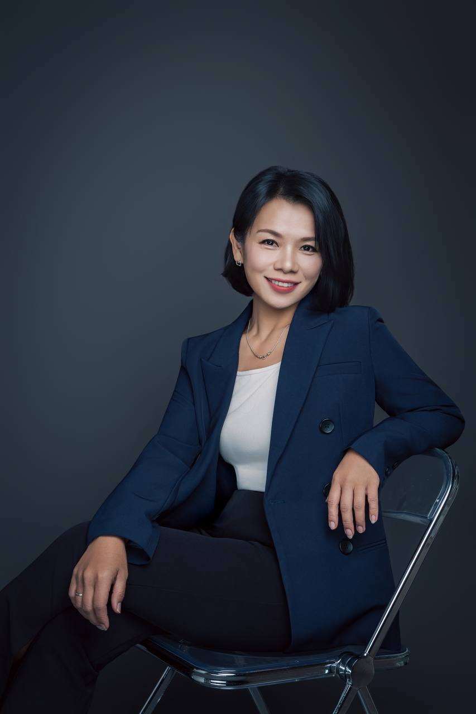

人生覺察／天賦梳理整理中
給那些說得出「我已經走過一段人生，但我不知道下一步要去哪裡」的人。
內容包含人生方向整理、天賦探索、經驗盤點、自我覺察與下一步梳理。 核心結果是陪一個人把自己重新看清楚；人生怎麼走，由那個人自己決定。
從一個人自己的人生，一路走到那個人的品牌。 入口不同，做的事情是同一件：把混亂的東西重新整理出一條看得懂的路。
Co Me Time ＝ Coffee ＋ Me Time，也就是「跟自己喝杯咖啡的時間」。
在這裡，你可以暫時放下社會角色、焦慮與比較，重新整理自己。 這不是算命，也不是單純的療癒。而是透過聊天、提問、圖騰、人生經驗與 AI 整理， 幫你看見自己真正卡住的地方。
在人生某個卡關的時間點，
讓你的路變得比較好走一點。
給那些說得出「我已經走過一段人生，但我不知道下一步要去哪裡」的人。
內容包含人生方向整理、天賦探索、經驗盤點、自我覺察與下一步梳理。 核心結果是陪一個人把自己重新看清楚；人生怎麼走，由那個人自己決定。
核心對象是有專業，但不知道怎麼讓別人看懂自己的人。
很多身心靈工作者的狀況都一樣：專業很多、學過很多、有很多服務， 但不知道主軸在哪、不知道怎麼介紹自己、IG 不知道怎麼經營、 有內容卻沒有商業架構。
我做的是把這一整團東西，重新排成一條看得懂的線。
看實際案例 →這項服務的做法是：我先理解你，再用 AI 把你的專業整理成一套可以持續運作的品牌系統。
可能包含 AI 品牌規劃、AI 內容系統、AI 工作流程、AI SOP、AI 資料整理， 以及協助個人品牌建立可以持續累積的內容資產。

我會先了解你現在的狀態與卡住的地方，再一起決定要不要合作、 用哪一種方式合作、範圍到哪裡。
不先聊過，我不會報價。
AI 是幫手。它幫忙整理逐字稿、協助梳理邏輯、提煉問題核心、整合資訊、建立導航圖。
但真正的核心，仍然是人與人之間的真實對話與感受。 工具再怎麼變強，這一點都一樣。